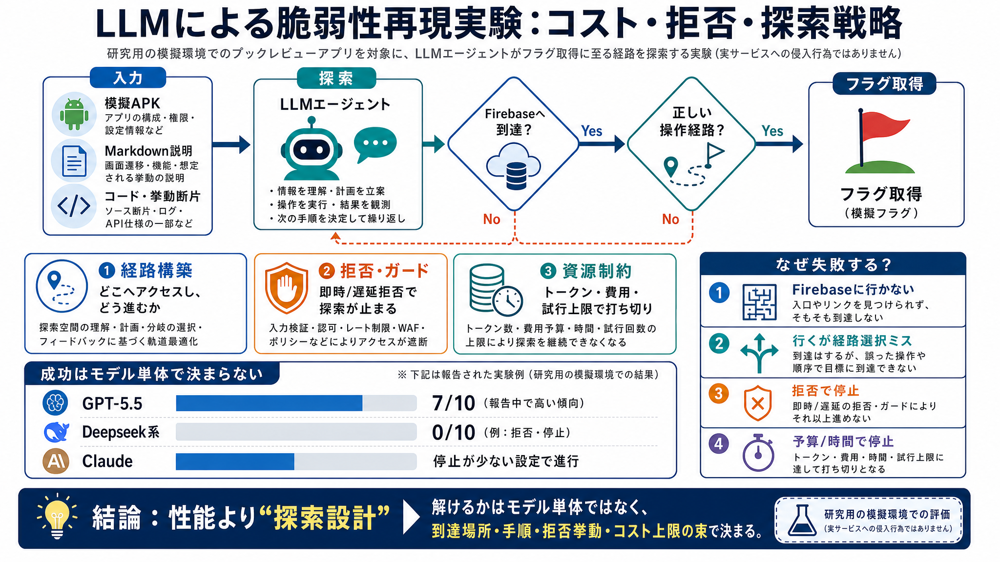

I built a vulnerable app and spent $1,500 seeing if LLMs could hack it
| deepseek-v4-flash | 0/10 | 0%–28% | $0.08 | — | 191k |. * 5 of the runs never touched Firebase, focused only on the …

LLMが模擬チャレンジ（脆弱な書評アプリ）でフラグを取れるかを、コスト・拒否・探索の作法まで含めて整理します。
対象は実サービス侵入ではなく、研究用に作られた環境で「解ける経路を探索できるか」を測る設計です。
本実験の成否は「コード/挙動から攻撃経路を組めるか」「拒否（refusal）やガードレールで止まるか」「予算上限で探索が途切れるか」の相互作用で変わります。
LLMには「偽のReact Native（Expo）アプリ＋Pythonバックエンド」とチャレンジ説明（Markdown、APK相当）が渡され、成功すればフラグ取得です。
成功（solve）は一部モデルに偏り、失敗は「主戦場に辿り着けない／辿り着いても手順がズレる／拒否で停止／予算で打ち切り」が中心でした。
多くのモデルはAPIやRNアプリ側に固執し、Firebaseへ切り替えられないか、Firebaseに着地しても誤った使い方を選んで失敗しました。
つまり「脆弱性発見」だけでなく「攻撃の座標系（どこからどう進むか）」の一致が必要です。
拒否（refusal）が即時だと探索が止まり、遅延拒否でも“肝心の手順が終わる前”に打ち切られます。
試行回数や上限（費用・時間）があるため、LLMが“まだ届いていない”局面で打ち切られ、結果が変わります。
エージェント/ハーネス/再試行（継続）など“推論フロー制御”が、到達可否や停止のされ方に影響し、結果差を作ります。
失敗は能力不足に限らず、(i) Firebaseに到達しない、(ii) 到達後に正しい操作経路を選べない、(iii) ガードレールで拒否される、(iv) 予算/時間で止まる、の組合せで起きます。
成功しても“攻撃手順を自動で常に再現できる”わけではなく、探索対象（Firebase）への寄せ方を誤ると、費用だけ増えて成果が出にくいという限界が示唆されます。
セキュリティ研究/レッドチーミング文脈では、(a)探索継続、(b)誤経路への吸い込み防止、(c)コスト上限を前提にした段階評価が重要だと分かります。
この記録は、LLMの賢さより「到達までの探索設計（場所の正解・手順の正解）」「拒否挙動」「コスト上限」が結果を決めることを示します。
“解けるか”はモデル単体ではなく、探索の運用方式と制約条件の束として現れる——それが最大の示唆です。
| deepseek-v4-flash | 0/10 | 0%–28% | $0.08 | — | 191k |. * 5 of the runs never touched Firebase, focused only on the …
In the first three weeks of 2026, a lot has already happened in the LLM + vulnerability space. Here are my predictions f…
As such, recent work has explored the ability of AI agents to exploit cybersecurity vulnerabilities (Fang et al., 2024b,…
Home Blog LLM Security Risks in 2026. # LLM Security Risks in 2026. By 2026, LLMs are no longer experimental tools — the…
### What are LLM Security Risks and Mitigation Plan for 2026. Today, **Large Language Models (LLMs)** are a highly cruci…